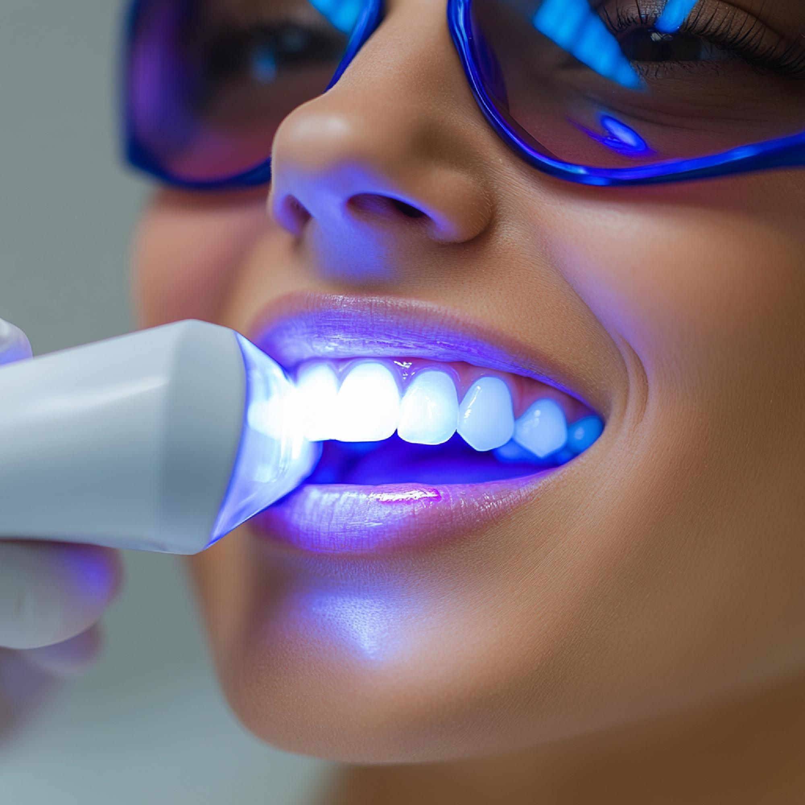
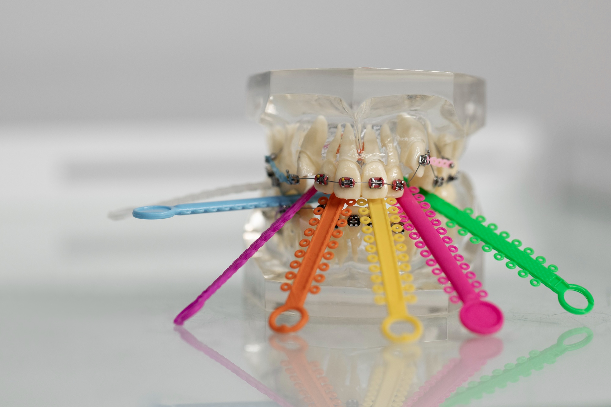
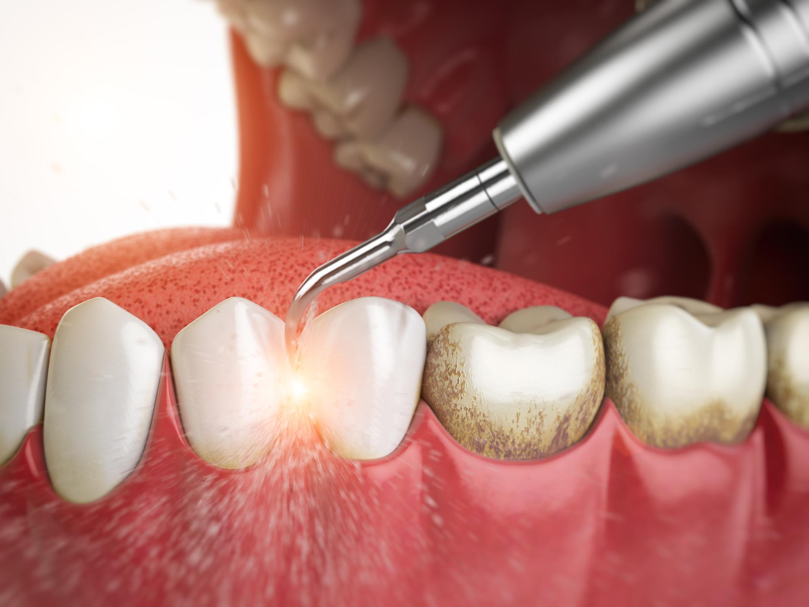
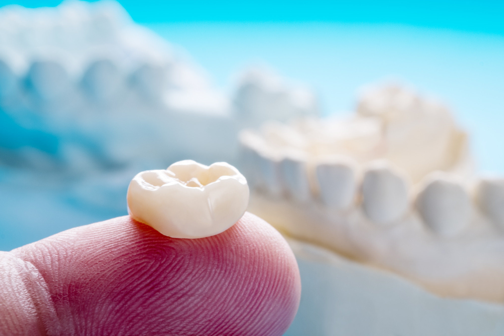
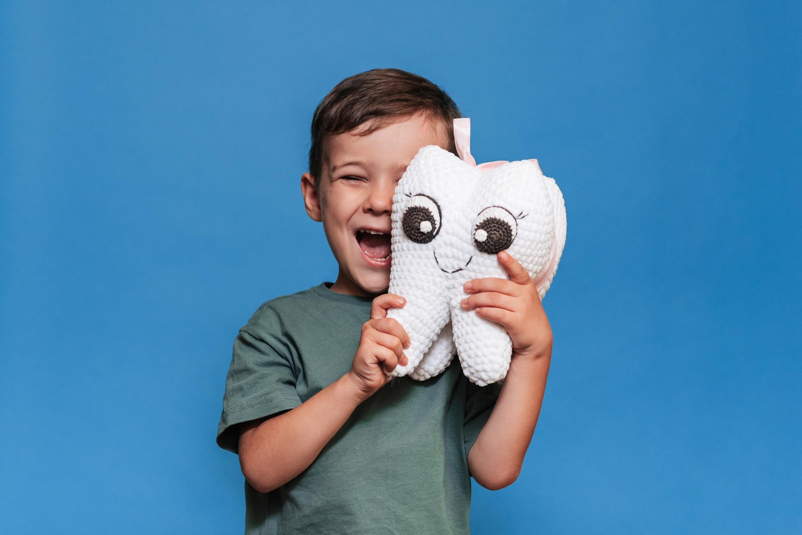
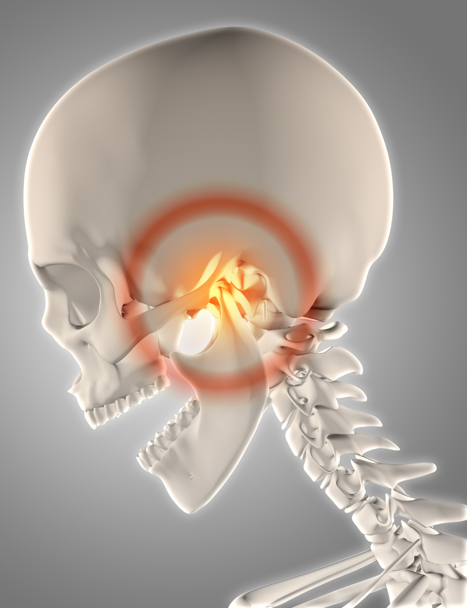
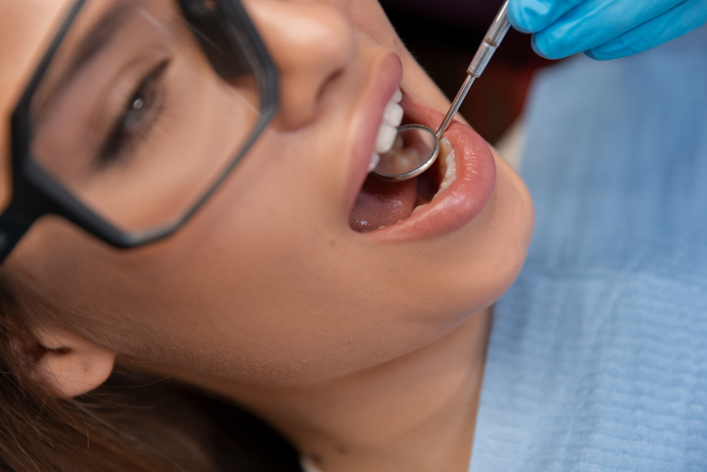
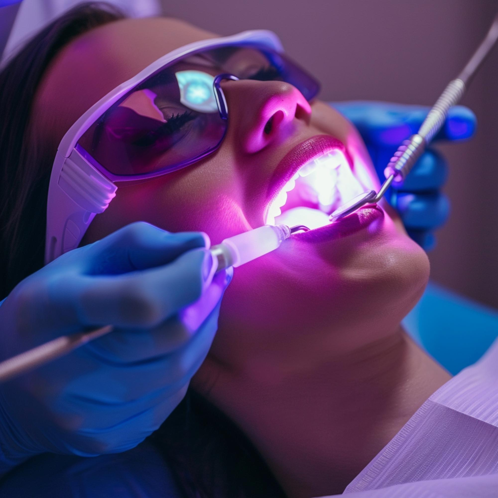
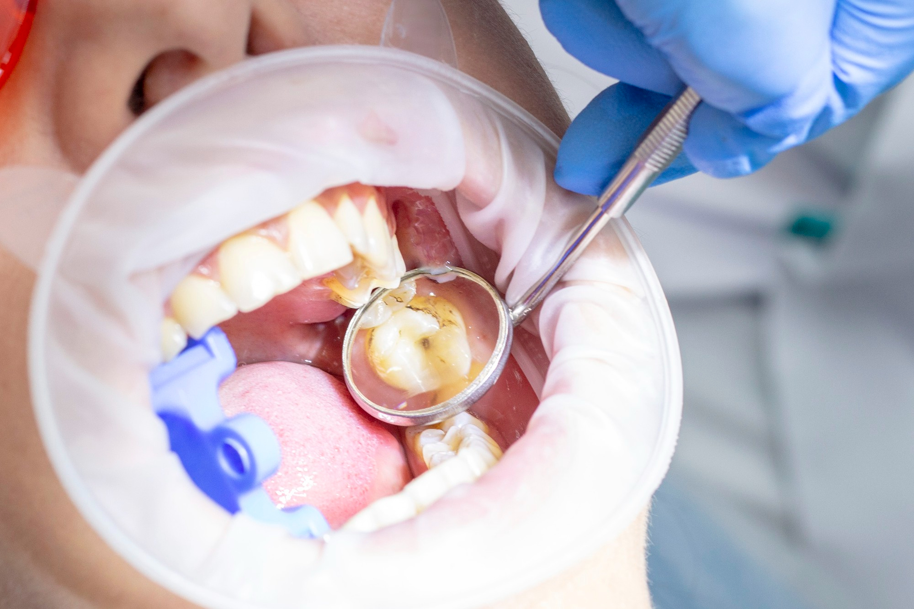
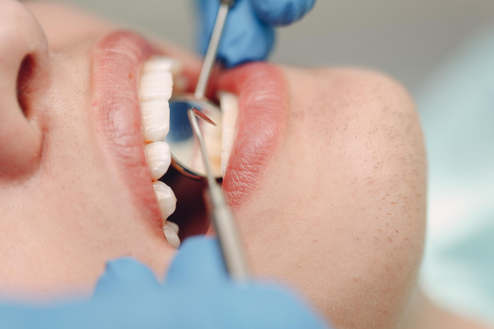

Nuestros Servicios


Priscilla Monge
Egresada de la Universidad de Costa Rica
La base de una sonrisa saludable comienza con una atención preventiva y personalizada. La Odontología General está enfocada en prevenir, diagnosticar y tratar los problemas más comunes de la salud bucodental. Mediante revisiones periódicas, limpiezas profesionales, restauraciones y tratamientos preventivos, nuestro equipo trabaja para mantener tu sonrisa sana y ayudarte a evitar procedimientos más complejos en el futuro.

Ana María Meza
Egresada de la Universidad de Costa Rica
Una sonrisa alineada es mucho más que una cuestión estética; también contribuye a una mejor salud bucodental. Nuestro servicio de Ortodoncia está enfocado en corregir la posición de los dientes y la mordida mediante tratamientos personalizados para niños, adolescentes y adultos. Utilizamos técnicas modernas que permiten mejorar la función, la armonía de la sonrisa y la confianza de cada paciente durante todo el proceso.

Carlos Ortiz
Egresada de la Universidad de Costa Rica
Cuando el dolor dental aparece, actuar a tiempo puede marcar la diferencia para conservar tu diente natural. La Endodoncia es un tratamiento especializado que elimina la infección del interior del diente, alivia el dolor y evita su extracción. En Dental Expertise Center realizamos este procedimiento con precisión y tecnología adecuada, priorizando tu comodidad y la recuperación de tu salud bucodental.

Maria Jesus Gómez
Egresada de la Universidad de Costa Rica
La salud de tus encías es fundamental para conservar una sonrisa fuerte y saludable. Nuestro servicio de Periodoncia está especializado en la prevención, diagnóstico y tratamiento de las enfermedades que afectan las encías y los tejidos que sostienen los dientes. Mediante una atención personalizada y tratamientos oportunos, ayudamos a proteger tu salud bucodental y prevenir la pérdida dental, favoreciendo una sonrisa sana a largo plazo.

Paula Prendas
Egresada de la Universidad de Costa Rica
Recuperar la funcionalidad y la estética de tu sonrisa es posible con soluciones diseñadas para ti. La Prostodoncia se enfoca en la rehabilitación de dientes perdidos o dañados mediante prótesis fijas o removibles, restaurando la capacidad de masticar, hablar y sonreír con confianza. En Dental Expertise Center ofrecemos tratamientos personalizados que combinan precisión, comodidad y una apariencia natural para mejorar tu calidad de vida.

Yamileth Chaves
Egresada de la Universidad de Costa Rica
Una experiencia positiva desde la infancia es el primer paso hacia una sonrisa saludable para toda la vida. Nuestro servicio de Odontopediatría está dedicado al cuidado de la salud bucodental de bebés, niños y adolescentes, mediante un enfoque preventivo y una atención cercana. Creamos un ambiente seguro y amigable para que cada visita sea una experiencia tranquila, promoviendo hábitos saludables y el correcto desarrollo de la sonrisa.

Santiago Abadia / Alberto Polanco
Egresada de la Universidad de Costa Rica
Algunos tratamientos requieren un enfoque especializado para recuperar la salud y el bienestar del paciente. La Cirugía Oral y Maxilofacial se encarga del diagnóstico y tratamiento de enfermedades, lesiones y procedimientos quirúrgicos de la boca, los maxilares y las estructuras faciales. En Dental Expertise Center realizamos cada intervención con un alto nivel de precisión, priorizando la seguridad, la comodidad y una recuperación adecuada.
Cada sonrisa es única, por eso nuestro proceso comienza escuchándote. En la evaluación inicial realizamos un examen completo de tu salud bucodental para conocer el estado de tus dientes, encías y estructuras orales. Durante esta consulta también conversamos sobre tus necesidades, antecedentes y objetivos, resolviendo cualquier inquietud que puedas tener. Con esta información obtenemos una visión integral de tu caso, permitiéndonos identificar las mejores alternativas para cuidar tu salud y sentar las bases de un tratamiento personalizado.

Con la información obtenida, elaboramos un plan de tratamiento diseñado especialmente para ti. Analizamos los resultados de la evaluación para determinar las opciones más adecuadas según tus necesidades y expectativas. Nuestro equipo te explicará cada procedimiento de manera clara y transparente, resolviendo todas tus dudas para que puedas tomar decisiones con confianza. El objetivo es que conozcas cada etapa del tratamiento y te sientas acompañado durante todo el proceso.

Nuestro equipo te acompañará en cada etapa con atención profesional, tecnología moderna y un enfoque personalizado. Cada tratamiento es realizado por especialistas comprometidos con brindar una atención segura, cómoda y de alta calidad. Trabajamos con técnicas actualizadas y equipos especializados para ofrecer resultados funcionales y estéticos, procurando que cada visita sea una experiencia positiva y que el proceso se desarrolle con la mayor tranquilidad posible.

Nuestro compromiso con tu sonrisa continúa incluso después de finalizar el tratamiento. Realizamos controles periódicos para evaluar tu evolución, verificar que los resultados se mantengan y atender cualquier necesidad que pueda surgir. Además, te brindamos recomendaciones personalizadas sobre higiene y cuidados preventivos para ayudarte a conservar una excelente salud bucodental a largo plazo. Creemos que el seguimiento es una parte esencial para garantizar tratamientos exitosos y sonrisas saludables durante muchos años.
